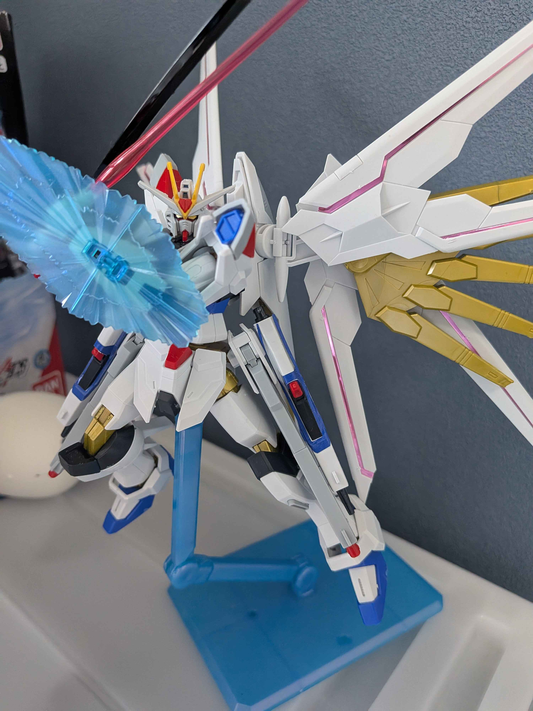
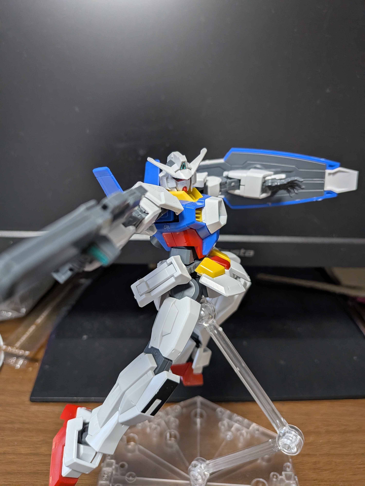
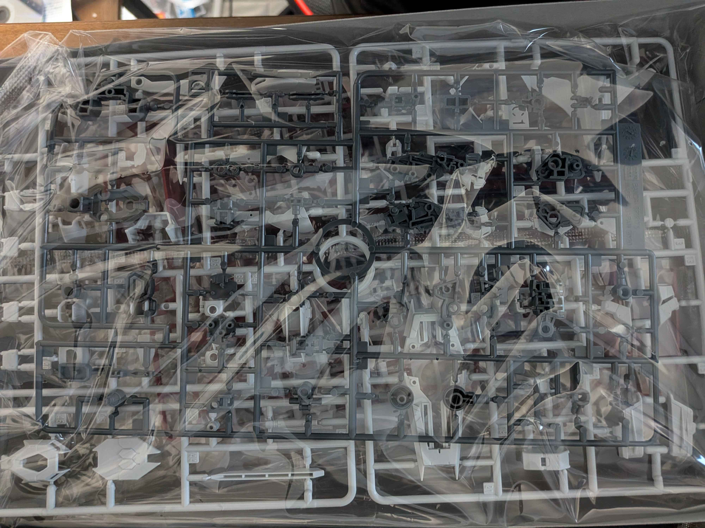
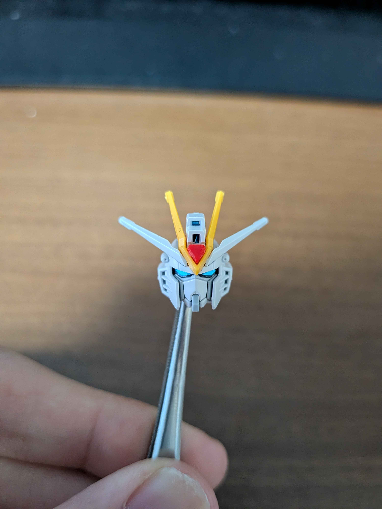

制作進捗・完成報告
毎週金曜日更新の制作進捗や、隔週での素組完成報告をまとめるページです。積みプラを崩していく軌跡をリアルタイムでお届けします。
【隔週更新】ガンプラ完成報告

【完成】HG マイティストライクフリーダム
投稿日：
最新キットのHG マイティストライクフリーダムが素組で完成しました！パーツ精度が高く、素組だけでも非常に見栄えが良いです。二度切りと丁寧なゲート処理を行い、ウイングや武装の質感もしっかり活かして仕上げました。

【完成】HG を最高の素組で仕上げる！
投稿日：
予告通り、2週間かけてじっくり組んだHGキットが完成しました！「素組の極意」で紹介した2度切りと、ヤスリでの丁寧なゲート処理のみで仕上げています。成型色を活かしたカッチリした立ち姿をぜひご覧ください。
【毎週金曜】制作進捗状況

【進捗】RG ランナーを見て箱を閉じる
投稿日：
今週から取り掛かろうとしましたが、そっ閉じしました…

【進捗】今週の積みプラ崩し：胴体・頭部の2度切り徹底
投稿日：
ブログ更新スケジュール通り、今週の進捗です。箱を開けてまずはA・Bランナーのパーツから切り出し。特に顔のアンテナ部分は白化しやすいので、余裕を持った2度切りを徹底しています。